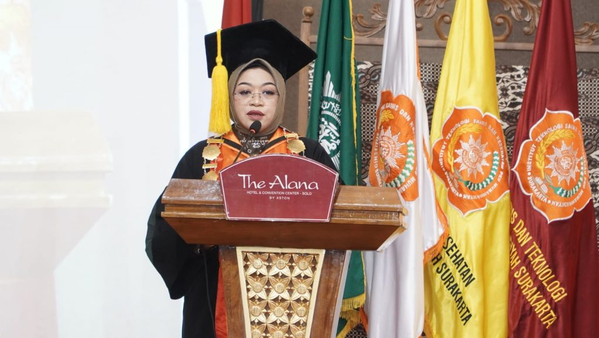
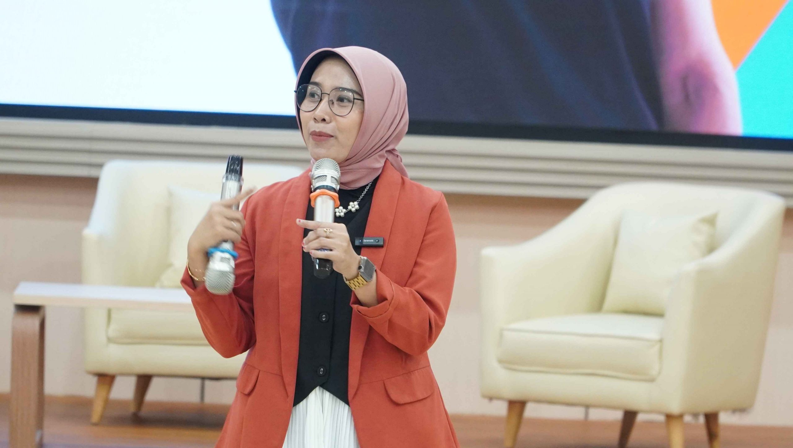

Pimpinan Daerah Muhammadiyah Majlis Pembina Kesehatan Kodia Surakarta, yang diberi kewenangan mengelola amal usaha Muhammadiyah dibidang kesehatan, merasa terpanggil dan mempunyai tekad untuk mengembangkan usahanya. Tidak hanya pada pelayanan kesehatan saja tetapi juga pada usaha pendidikan tenaga kesehatan. Maka pada tahun 1993 Pimpinan Daerah Muhammadiyah Majlis Pembina Kesehatan Kodia Surakarta mengajukan ijin pendirian Pendidikan D.III Kesehatan. Dan berdiri dengan nama Akademi Keperawatan Muhammadiyah Surakarta disingkat Akper Muhammadiyah Surakarta dengan ijin operasional Nomor: HK.00.06.1.1.3180 tanggal 1 September 1993. . Pendirian ini sebagai upaya kerjasama dengan pemerintah untuk memajukan kesejahteraan Ummat dan mencerdaskan kehidupan bangsa
Akademi Keperawatan Muhammadiyah Surakarta disingkat Akper Muhammadiyah
Surakarta dengan ijin operasional Nomor: HK.00.06.1.1.3180 tanggal 1
September 1993. Pendirian ini sebagai upaya kerjasama dengan pemerintah
untuk memajukan kesejahteraan Ummat dan mencerdaskan kehidupan bangsa.
Banyaknya Institusi Pendidikan Tenaga Kesehatan yang muncul pada saat
itu dan adanya kesamaan nama dengan Intitusi lain. Maka ± pada tahun
1994 Pimpinan Daerah Muhammadiyah Kodya Surakarta menetapkan penggantian
nama dari AKPER Muhammadiyah Surakarta menjadi AKPER PKU Muhammadiyah
Surakarta.
Dasar dipilihnya program D.III Kesehatan (keperawatan) karena semakin
meningkatnya pembangunan di bidang kesehatan, maka dengan sendirinya
masalah tenaga kesehatan juga akan mengalami peningkatan. Dan diupayakan
dalam hal tenaga kesehatan disamping untuk keperluan internal Institusi
Kesehatan Muhammadiyah, Harapan didirikannya Institusi Pendidikan Tenaga
Kesehatan ini dapat membantu pemerintah dengan menghasilkan tenaga
perawat yang professional dan bertaqwa kepada Allah, SWT.
Pada tanggal 5 September 2008 Akper PKU Muhammadiyah Surakarta mendapat
amanah dari Kementerian Pendidikan Nasional R.I. untuk mengelola Akbid
PKU Muhammadiyah Surakarta dengan SK. Mendiknas. R.I. No.: 177/D/O/2008.
Selanjutnya pada tanggal 25 Desember 2009 Akper PKU Muhammadiyah
Surakarta mendapat ijin alih bina dari Depkes ke Diknas dengan nomor:
152/D/O/2009. Dan pada tanggal 28 September 2011 Akper PKU Muhammadiyah
Surakarta mendapat SK. Perpanjangan Ijin dari Kementerian Pendidikan
Nasional Kopertis Wilayah VI Provinsi Jawa Tengah dengan nomor:
8813/D/T/K-VI/2011.
|

224 Mahasiswa ITS PKU MUHAMMADIYAH di wisuda
Maret, 10, 2024 oleh: humas ITSPKU |

Pelatihan Publik Speaking
ITS PKU Muhammadiyah Surakarta telah menggelar pelatihan
public speaking yang bertemakan “Explore Your Skill The Young
One Spoke” dengan sukses |
MUHAMMADIYAH HIBAHKAN RUMAH SAKIT LAPANGAN SENILAI 2,5 M KEPADA KEMENTRIAN KESEHATAN TURKIHataya, Turki. Setelah berakhirnya penugasan 23 personil EMT Muhammadiyah menjadi bagian dari Indonesia Emergency Medical Team (INA-EMT). |